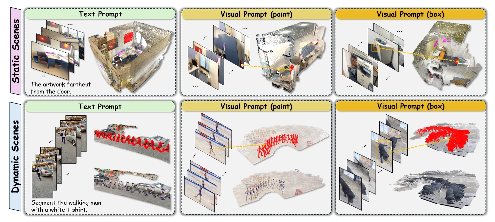
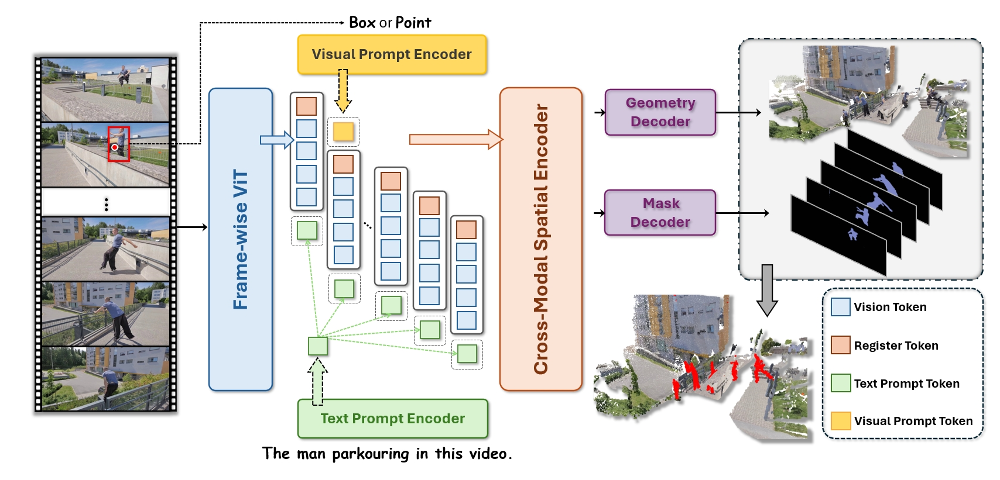
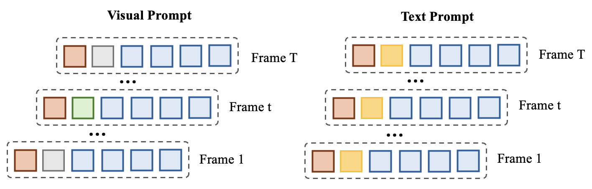
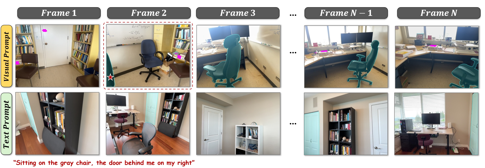
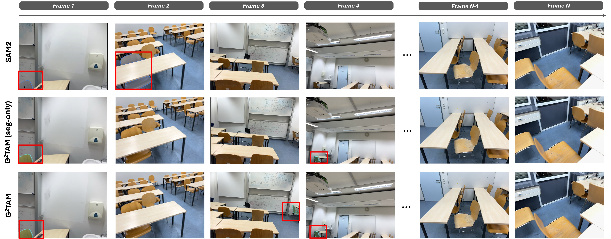
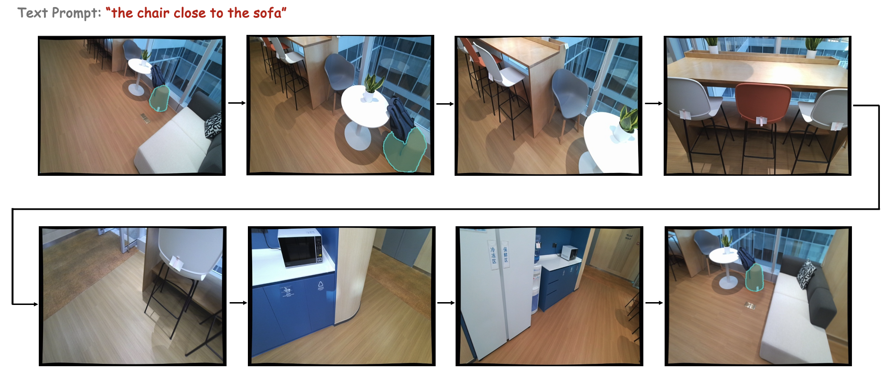

Prompt encoders
Point and box prompts are represented through coordinates and type embeddings. Text prompts are encoded with CLIP and projected into the same latent space.
ICML 2026 submission
Geometry Grounded Track Anything Model
Promptable instance tracking in 3D space from unordered RGB images or videos, using geometry as an implicit memory for stable identity reasoning across views and time.
HKU · Shanghai AI Laboratory · BUAA · SJTU · UCLA · ZJU

Overview
TL;DR G2TAM takes unordered images or videos plus a text, point, or box prompt, then jointly predicts 3D geometry and spatially consistent instance masks.
Human spatial understanding arises from jointly perceiving geometry and semantics, enabling consistent object identification and localization across viewpoints and time. Current video segmentation models rely on explicit object appearance memory banks, but remain vulnerable to large viewpoint changes and long-term occlusions.
G2TAM uses spatially aligned geometric representations as implicit memory. A cross-modal spatial encoder integrates visual and textual prompts into a shared geometric space, supporting end-to-end reconstruction and instance-consistent mask prediction.
Method

Point and box prompts are represented through coordinates and type embeddings. Text prompts are encoded with CLIP and projected into the same latent space.
Prompt tokens are fused with per-frame DINOv2 vision tokens and register tokens, then processed through intra-view and global cross-view attention.
The fused representation predicts camera geometry, point maps, confidence maps, and prompt-conditioned masks without a separate temporal memory bank.

InsTrack and PIST
InsTrack builds on ScanNet++ and provides RGB images, multi-modal prompts, depth maps, camera poses, and 3D-consistent instance masks. The benchmark is split into InsTrack-Text and InsTrack-Visual to evaluate language and visual prompts separately.

Given a point, box, or referring expression on any view, PIST evaluates whether the same object is segmented consistently across all views.
Results
S-mIoU / S-SR on InsTrack validation, compared with SAM2 at 47.6 / 53.1 on visual prompts.
Substantially above ReferFormer at 37.6 / 43.7 and ReferDINO at 41.7 / 48.2.
Large gains over Cutie-base and SAM2 under large viewpoint changes.
Best Abs. Rel / delta on the InsTrack reconstruction metrics reported in the paper.

| Task | Setting | Baseline | G2TAM |
|---|---|---|---|
| 3D visual grounding | ScanRefer Acc@0.5 | VLM-Grounder 32.8 | 45.7 |
| 3D visual grounding | NR3D Acc@0.5 | 3D-VisTA 42.2 | 45.8 |
| Semi-supervised VOS | MOSE val J&F | SAM2 75.2 | 77.8 |
| Referring VOS | Ref-YouTube-VOS J&F | ReferDINO 69.3 | 72.2 |
Long-term Spatial Memory

Citation
@article{zhu2026g2tam,
title={G2TAM: Geometry Grounded Track Anything Model},
author={Zhu, Chenming and Cao, Peizhou and Lin, Jingli and Hu, Wenbo and Ran, Yunlong and Pang, Jiangmiao and Wang, Tai and Liu, Xihui},
journal={arXiv preprint},
year={2026}
}